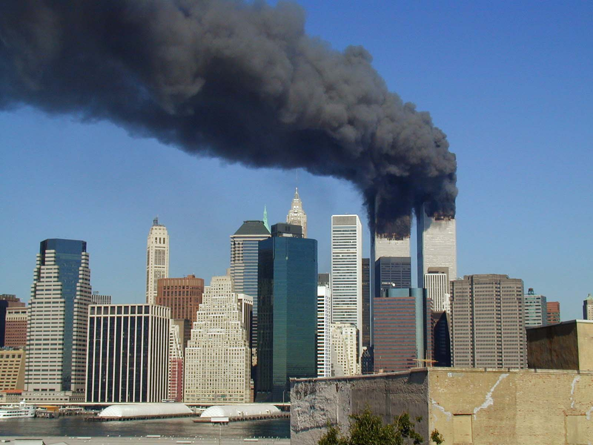

Доколумбова епоха
Остаточно не відомо, як і коли корінні американці вперше поселилися на території сучасних Сполучених Штатів. Переважна більшість теорій припускає, що люди мігрували з Євразії через сухопутний міст Берингії, який з'єднував Сибір і Аляску під час льодовикового періоду. Згодом вони переселилися на південь по всій Америці і, можливо, дійшли до Антарктиди. Ця міграція розпочалася приблизно 30000 років тому[1] і тривала близько 20000 років, поки сухопутний міст не був затоплений внаслідок підвищення рівня моря, викликаного закінченням останнього льодовикового періоду.[2] Ці давні мешканці, звані палеоамериканцями, незабаром розділились на багато сотень різноманітних народів, племен і народностей.
США в Першій світовій війні
На початку Першої світової війни в США переважало прагнення зберегти нейтралітет. Президент Вільсон, шокований руйнівним характером конфлікту і стурбований його можливими несприятливими наслідками для США у разі затягування військових дій, намагався виступити посередником між протиборчими сторонами. Але його миротворчі зусилля не увінчалися успіхом, головним чином через те, що обидві сторони не втрачали надію перемогти у вирішальній битві. Тим часом США все глибше грузли в суперечці щодо прав нейтральних країн на море. Велика Британія контролювала обстановку у Світовому океані, дозволяючи нейтральним країнам здійснювати торгівлю і одночасно блокуючи німецькі порти. Німеччина намагалася прорвати блокаду, застосовуючи нову зброю — підводні човни.[35]
У 1915 німецький підводний човен потопив британське пасажирське судно «Лузітанія», при цьому загинуло понад 100 американських громадян. Вільсон негайно заявив Німеччині, що незпровоковані напади підводних човнів на судна нейтральних країн є порушенням загальноприйнятих норм міжнародного права і повинні бути припинені. Німеччина на початку 1917 року погодилася припинити необмежену підводну війну, але лише після загрози Вільсона застосувати найрішучіші заходи. Проте, в лютому і березні 1917 були потоплені ще кілька американських суден, а телеграма Циммермана мексиканському уряду з пропозицією союзу проти США змусила Вільсона запросити згоду Конгресу на вступ країни у війну. В результаті 6 квітня 1917 Конгрес оголосив війну Німеччині.[35]
Друга світова війна

Як і під час Першої світової війни, Сполучені Штати не розпочали безпосередньо бойові бої після початку Другої світової війни. Однак вже у вересні 1940 року США запровадили програму ленд-лізу — надання допомоги озброєнням Великій Британії. Штати також підтримали Китай, який вів війну з Японією і оголосили ембарго на поставки нафти в цю країну. Після нападу Німеччини на СРСР в червні 1941 р програма ленд-лізу була поширена і на СРСР.
7 грудня 1941 Японія несподівано напала на американську військово-морську базу в Перл-Гарборі, виправдовуючи свої дії посиланнями на американське ембарго. На наступний же день США оголосили війну Японії. У відповідь на це Німеччина оголосила війну США.[45]
На тихоокеанському театрі воєнних дій ситуація для США спочатку складалася несприятливо. 10 грудня 1941 японці почали вторгнення на Філіппіни, і до квітня 1942 повністю їх окупували. Велика частина американських і філіппінських військ, які там базувалися, потрапила в полон. Але Битва при атолі Мідуей 4 червня 1942 року стала переломним моментом у війні на Тихому океані.
США в період холодної війни (1945—1991)
Після завершення Другої світової війни, Сполучені Штати разом з СРСР перетворилися на одну з двох домінуючих наддержав. Сенат США прийняв рішення про участь країни в Організації Об'єднаних Націй, що ознаменувала перехід від традиційного ізоляціонізму до розширення міжнародної участі.[52].
Фундаментальні відмінності в уявленнях, сформованих в СРСР і США щодо принципів побудови післявоєнного світу, залишали мало можливостей для досягнення компромісу. ООН, яка була створена для досягнення політичних угод і запобіганню нових війн, не змогла впоратися з цим завданням[53]. США відкидали колоніалізм і тоталітарне управління, дотримуючись політики, декларованої в Атлантичній хартії: самовизначення націй, вільний світовий ринок, відновлення Європи.
США в XXI столітті
11 вересня 2001 року («9/11») Сполучені Штати стали жертвою одного із найбільших терористичних нападів, що глибоко потрясли країну. Вранці того дня чотири групи терористів, причетних до Аль-Каїди, загальною кількістю 19 осіб, захопили 4 рейсові пасажирські авіалайнери. Загарбники направили двоє літаків в башти Всесвітнього торгового центру, розташовані в південній частині Манхеттена в Нью-Йорку.
Рейс 11 American Airlines врізався в башту ВТЦ-1 (північну), а рейс 175 United Airlines — у вежу ВТЦ-2 (південну). В результаті цього обидві будівлі обрушилися, викликавши серйозні руйнування прилеглих територій. Півтори години потому, третій літак врізався в Пентагон, штаб-квартиру міністерства оборони США поблизу Вашингтона. Четвертий літак розбився недалеко від Піттсбурга, штат Пенсильванія. Внаслідок атак загинуло близько 3000 чоловік. У відповідь президент Джордж Буш 20 вересня оголосив «війну з терором». 7 жовтня 2001 року Сполучені Штати і НАТО ввели війська в Афганістан, щоб витіснити режим талібів, який надавав притулок «Аль-Каїді» та її лідеру Осамі бен Ладену.